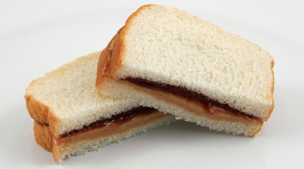

Peanut Butter and Jelly Sandwich (PBJ)
Go Back
Description

A classic lunch staple, the peanut butter and jelly sandwich might not be the most impressive
sandwich in the market, but it gets the job done by being itself. Simple, elegant, and tasty.
What else could you ask for?
Ingredients
Makes 2 Sandwiches
- 2 tablespoons of peanut butter
- 2 tablespoons of jelly or jam (e.g.,grape, strawberry, rasberry)
- 2 slices of bread
Steps
- Lay out two slices of bread on a clean surface.
- Use a butter knife to spread 1 tablespoon of peanut butter evenly over one slice of bread.
- Use a separate knife or spoon to spread 1 tablespoon of jelly or jam evenly over the other slice of bread.
- Place the slice with the peanut butter on top of the slice with the jelly, peanut butter side facing the jelly.
Tips
- If you are allergic to peanuts, you can substitute it for another type of nut butter like almond butter. If you
are allergic to nuts, put jelly on both slices of bread instead of the nut butter.
- For extra flavor, try adding a sprinkle of cinnamon or a few slices of banana to the peanut butter before closing the sandwich.